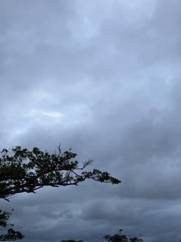
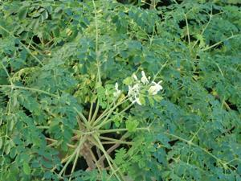
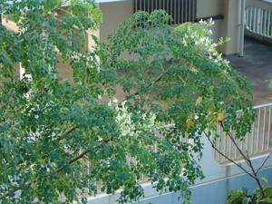
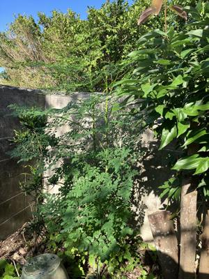

うるがいの話 ある日
最新: モリンガの若木【うるがいの話 ある日】とは 一日だけのプログです
『うるがいの話』の最新一日だけのプログで、通信料が少なく経済的だ。カニの画像をクリックすると全ての日付が載る『うるがいの話』サイトを表示します
|
|
【うるがいの話】 うるがい(ｳﾙｶﾞｲ urugai)とは、『もずくがに』の名前でとても大きくなります。 |
|---|---|
|
|
【カミマヤーの話】 猫のことを方言でマヤーといいます。カミマヤー（kamimayaa）とは、神の猫のことです。 |
|
【たながぁの音楽】 たながぁ（ﾀﾅｶﾞｰ tanagaa）とは手長えびのことで、何種類かあり大きいのは車 エビぐらいになります。 |

|
【ぶながぁの話】 ぶながぁ(ﾌﾞﾅｶﾞｰ bunagaa)とは、赤い髪の毛、赤い身体、そして身長は１ｍ２０ｃｍ ぐらい、川の蟹を食べているの目撃された。場所は沖縄県国頭郡大宜味村のと ある村僕の隣近所に住んでいる爺さんから、聞いた話です。 |
|
|
【ギーマの話】 ギーマ(giima)とは、山原の里山に咲くスズランに似た、 花を付けます。実は食べられます、 気が付くと口の周りが紫になっています。 |
2023年12月13日 (水）モリンガの若木
14:53
  
９月１８日に、台風６号で被害を受けたブーゲンビリアとともに大木になって
いたモリンガの二つの木（桜の木も２つ）を根元から剪定してもらった。日当
たりが良くなった裏庭に気がつくと、モリンガの若木がすくすくと成長してい
た。ん～、とるのもなんだよなとそのままにしている。モリンガは、土壌をキ
レイにしてくれると聞いた。もともとは、２００８年に義弟から、下の妹の法
事４９日の期間（毎週名護へ通った）に農場で栽培していると鉢植えをもらい
植えたのだった。モリンガの木は、固い実をつけるといって一度豆をもらった
ことがあった。いつかは、実をつけると期待していた。８年前に一度だけ、実
を付けた。写真は、丁度８年前の２０１５年１２月１３日の花である。木は大
きく成りすぎて、毎年のように大きく剪定した。そのせいか花は、咲かなくな
った。この若木はどうなるのであろう。剪定作業の支払い請求が、なかなか来
なかった。年越しにならないよう先月に、支払いの督促をして４万２千９百円
を１１月２２日に支払った（恐らくかなり安い）。

１４時４７分 ビットコインの総資産 ￥１７、２８４（↓２５５）